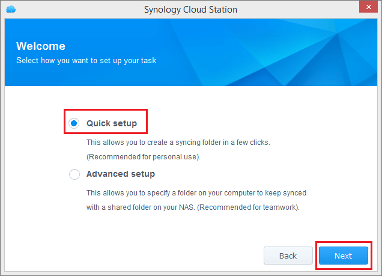

Überblick
Cloud Station für Synology NAS ist eine Dateisynchronisierungsanwendung, mit der Sie Dateien auf Ihrem Synology NAS mit anderen Geräten, wie etwa Computer oder Mobilgeräte (mit DS cloud), mühelos synchronisieren können. Nachdem Cloud Station sowohl auf Ihrem Synology NAS als auch auf dem Computer installiert wurde, werden die in einem bestimmten Ordner auf Ihrem Computer befindlichen Dateien automatisch mit Ihrem Synology NAS synchronisiert.
1. Cloud Station installieren
- Gehen Sie zu Paketzentrum, suchen Sie Cloud Station und klicken Sie auf Installieren.

2. Cloud Station aktivieren
- Starten Sie Cloud Station.
- Wenn Sie die Benutzer-Home-Funktion noch nicht aktiviert haben, werden Sie aufgefordert, dies zu tun. Klicken Sie auf OK.
- Sie werden zur Seite "Benutzereinstellungen" weitergeleitet. Aktivieren Sie Benutzer-Homes und klicken Sie auf Übernehmen.
- Gehen Sie jetzt zurück zu Cloud Station, dann werden Sie aufgefordert, sie zu aktivieren. Klicken Sie auf Ja.
- Gehen Sie zu Berechtigungen und geben Sie an, welche Benutzer Cloud Station verwenden dürfen. Klicken Sie auf Speichern.


3. Client installieren und aktivieren
- Gehen Sie zu Cloud Station > Übersicht, und klicken Sie auf die Schaltfläche Computer.
- Klicken Sie auf die Schaltfläche, um Cloud Station für Ihr Betriebssystem herunterzuladen. (Sie können Cloud Station auch im Download-Zentrum von Synology herunterladen.)
- Starten Sie das Installationsprogramm auf Ihrem Computer und folgen Sie den Bildschirmanweisungen.
- Nach der Installation führen Sie auf Ihrem Computer Cloud Station aus. Klicken Sie auf Jetzt starten.
- Geben Sie die Adresse für den Synology NAS, auf dem Cloud Station läuft (oder die QuickConnect-ID), sowie den Benutzernamen und das Kennwort ein. Sie können rechts auf das Suchsymbol klicken, um nach IPs in Ihrem LAN zu suchen. Klicken Sie auf Weiter.
- Wählen Sie aus, wie Sie Ihre Aufgabe einrichten möchten (hier wählen wir Schnelles Setup aus), und klicken Sie auf Weiter. 
- Klicken Sie auf Fertig stellen, um das Setup Ihres Cloud Station-Ordners abzuschließen.
- Klicken Sie auf Jetzt öffnen, um Ihren Cloud Station-Ordner zu öffnen.
- Das Cloud Station-Symbol befindet sich in der Taskleiste.
- Doppelklicken Sie auf das Cloud Station-Symbol, um die Taskleistenmenü zu öffnen. Hier können Sie den Fortschritt und den Status Ihrer Dateien anzeigen. Klicken Sie auf Hauptanwendung, um Cloud Station zu starten.
- Nach dem Starten werden einige Tipps zur Verwendung von Cloud Station angezeigt. Klicken Sie auf den Rechtspfeil, um weitere Tipps anzuzeigen, oder klicken Sie auf Zu Online-Anleitungen gehen, um weitere Informationen zu erhalten. Wenn Sie die Tipps nicht benötigen, klicken Sie auf Nicht mehr anzeigen.
- Jetzt können Sie Ihre Synchronisierungsaufgaben in Cloud Station verwalten.


4. Daten mit Mobilgeräten synchronisieren
DS cloud ist kostenlos erhältlich bei Apple App Store und Google Play Store. Sie können auch direkt den folgenden QR-Code scannen.